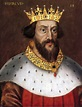

714604550 King Henry I of England
Kung av England. Blev högst 67 år.
Far:
Mor:
Född:
1068 England. [1]
Död:
1135 Saint-Denis, France. [1]
Barn med ?
Barn:
Personhistoria
Årtal
Ålder
Händelse
1068
Födelse 1068 England [1]
1083
Modern 1429209101 Queen Matilda av Flandern dör 1083 Caen, France [1]
>1083
Dottern 357302275 Queen Elisabeth Fitzroy (Henrysdotter) föds mellan 1083 och 1095 Talby, Yorkshire, England [2]
1087
Fadern 1429209100 King Wilhelm I Erövraren dör 1087 Gervase, Rouen, France [1]
1099?
Barnbarnet 178651137 Queen Afreca of Galloway föds omkring 1099 Scotland [3]
1130
Barnbarnet 178651137 Queen Afreca of Galloway dör 1130 Isle of Man, England [3]
1135
Död 1135 Saint-Denis, France [1]
Bilder

Källor
[1]
Wikipedia
[2]
Sissel Blom
[3]
Hagertz.se